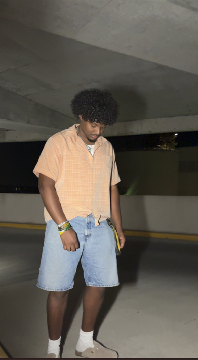

Meet Our Team
Learn more about the creators of this project and what technology inspires each of us!
Olivia Lueck

I am from Minnesota and I am a senior graduating this winter!
I enjoy exercising and spending time with my family and friends.
My favorite piece of technology is my Oura Ring because it helps me track my sleep, recovery, and daily activity.
Jeremie Peart

I am from Brooklyn, New York, and I am a junior studying Computer Science and Information Science.
I enjoy exercising, playing video games, cooking, finding good places to eat, and spending time with friends and family.
My favorite piece of technology is my new iPhone 16 Pro because of its amazing camera and performance.
Alayna Beringer

I am a second-year graduate student in the MLIS program and a new mom.
I enjoy spending time with my husband and daughter, listening to music, and reading when I have time!
My favorite piece of technology is my smartphone because of how convenient and efficient it is.